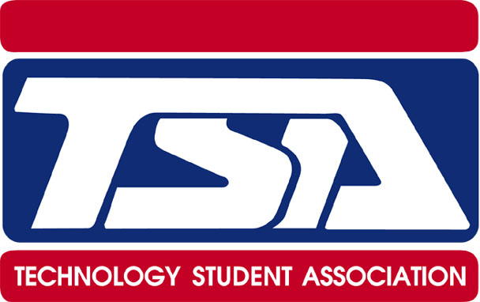

Programs of Study
CTE Organizations
TSA - Technology Students Association

"The Technology Student Association fosters personal growth, leadership, and opportunities in technology, innovation, design, and engineering. Members apply and integrate science, technology, engineering and mathematics concepts through co-curricular activities, competitive events and related programs."
- Technology Students Association, Mission Statement
HOSA - Health Occupatians Students of America
"The mission of HOSA is to enhance the delivery of compassionate, quality health care by providing opportunities for knowledge, skill and leadership development of all health science technology education students, therefore, helping students to meet the needs of the health care community."
-Health Occupations Students of America, Mission Statement.
Skills USA
"The mission of SkillsUSA Texas is to provide opportunities for its members to become successful and productive citizens, employees and leaders. Accomplished through a structured program of leadership training activities, communication and business partnerships."
- Skills USA, Mission Satement
Magnet Program - STAMP
This college preparatory program opened in August of 2012 at Veterans Memorial High School, and was the first of its kind that Brownsville ISD has seen. The profession-specific program offers challenging courses in Science, Technology (Engineering), Architecture, and Medical Professions.
Student Activities
Veterans Memorial Offers a Fine Arts Program which includes band, choir, dance, estudiantina, art, and theatre arts. Along with this Veterans includes a full blown athletic program that involves sports such as: football, volleyball, swimming, golf, tennis, cross country, track, baseball, softball, and soccer. Students at Veterans Memorial can also participate in JROTC, which enables students to get a taste of military occupations, while in high school.